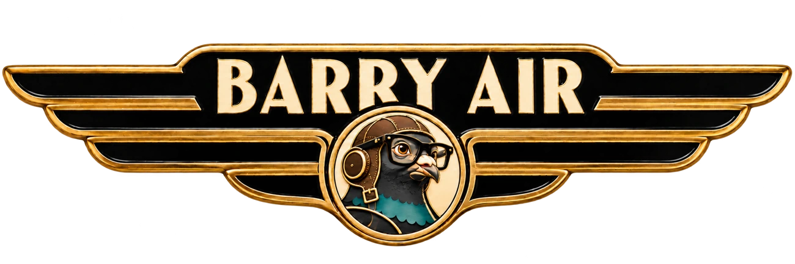
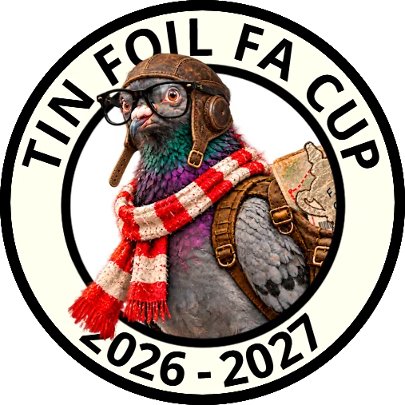

Established 2022
WELCOME ABOARD
Pigeon Control
Your Campaign. In flight.
Straight there. Straight back.
No messing about!

Preparing your boarding pass…
THE JOURNEY SO FAR
Departures & Arrivals
BARRY AIRDEPARTURES & ARRIVALS
ALL FLIGHTS ACCOUNTED FOREST. 2022
All Barry Air pigeons are pie-fed pigeons — guaranteed.
FOLLOW YOUR PIGEON
The flight path
Unfolding the flight map…
FlownNext flight
BARRY AIRFLIGHT OPERATIONS
Choose a ground, then use + to zoom. Drag to explore; ⌖ fits the whole route.
…
CURRENT CUSTODIAN
Your flight
AFC Fylde 5–0 Atherton Collieries